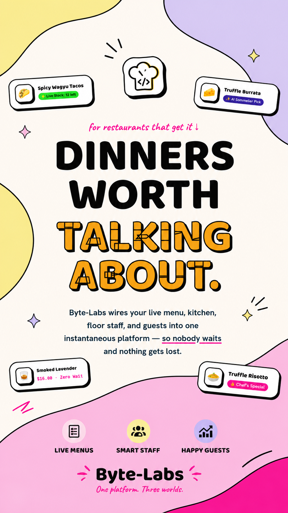
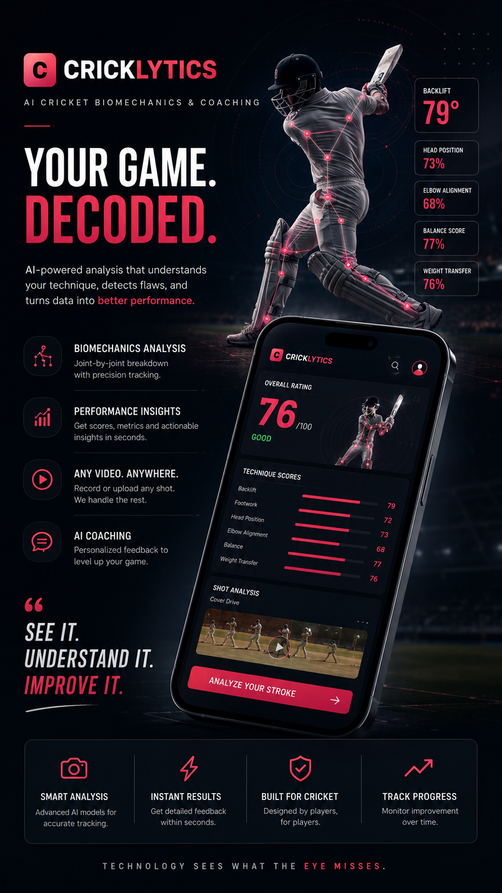
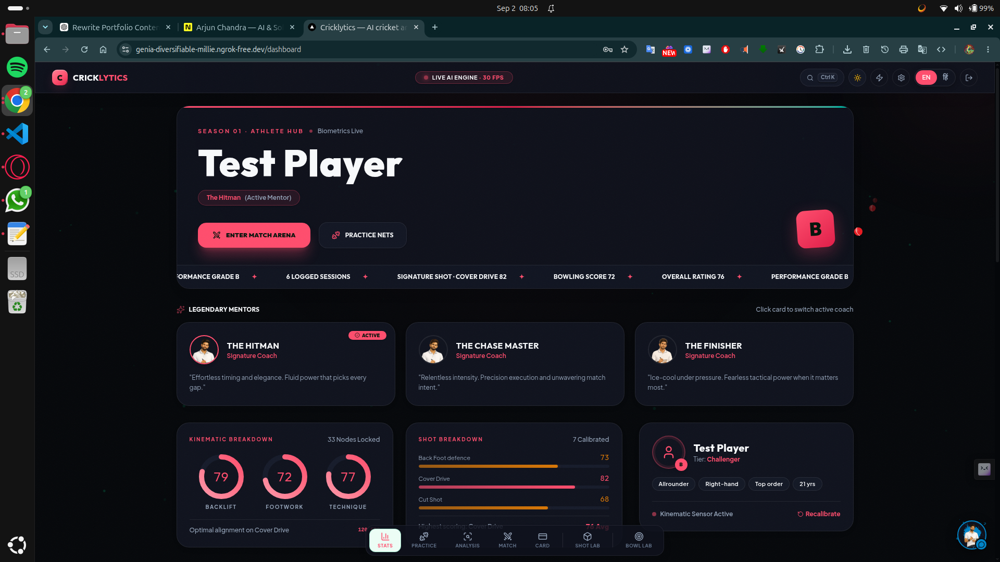
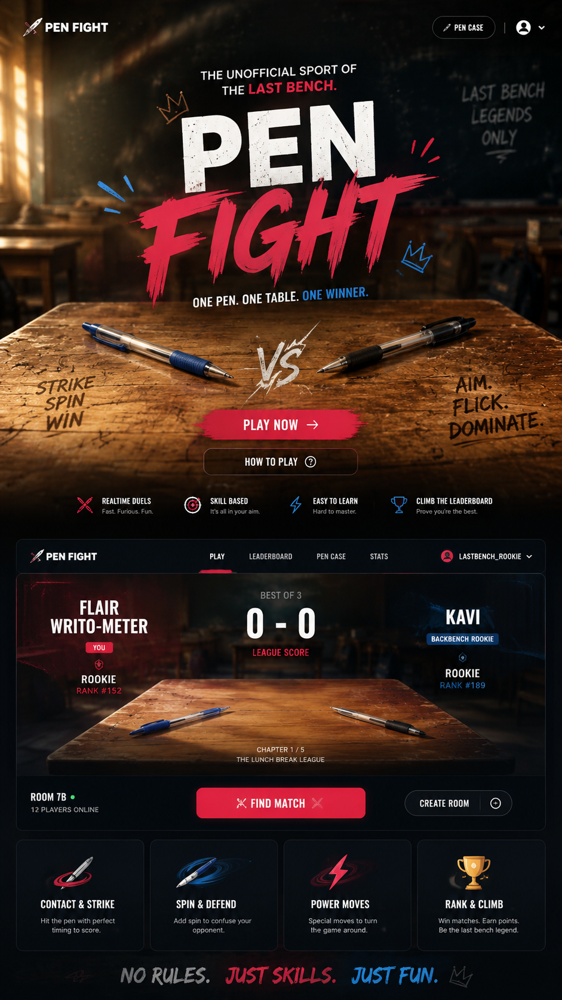

Getting Into Technology
Programming, Arduino, electronics, sensors and small software projects.
START SMALL. BUILD BIG.
I'm a student builder who likes turning ambitious ideas into working systems — across AI, software and computer vision.
I’m a student developer and AI enthusiast interested in building real products rather than only experimenting with tutorials.
My projects range from AI-powered cricket analysis and social-media intelligence to browser games, web applications, and foundational AI systems built from scratch.
I learn by building, breaking, rebuilding, and occasionally wondering why the thing worked in the first place.
THE JOURNEY
Each year added a new layer: electronics, code, intelligence, then complete products.
Programming, Arduino, electronics, sensors and small software projects.
Python, computer vision, automation, robotics and innovation programs.
Ambitious projects combining AI, hardware, vision and automation.
Complete products including Cricklytics, Byte Labs, Viralyst and Pen Fight.
Reproducing GPT-2 from scratch to understand architecture and training.
SELECTED WORK
A collection of software, AI, data and experimental projects.
WEB DEVELOPMENT · SOFTWARE · PRODUCT
Practical applications and experiments exploring modern web development, AI and product ideas — including Byte Eats.
Visit Byte Labs ↗
COMPUTER VISION · AI · SPORTS TECHNOLOGY
An AI-powered cricket biomechanics platform that analyzes batting technique joint-by-joint from a smartphone video.
Try Cricklytics ↗

AI · CONTENT INTELLIGENCE · DATA
Content intelligence for revealing the hooks, structure, psychology and pacing behind high-performing media.
Currently in development ↗GAME DEVELOPMENT · WEB · INTERACTION
A complete browser game based on the absurdly competitive school pastime of fighting with pens.
Play Pen Fight ↗
DEEP LEARNING · TRANSFORMERS · PYTORCH
Implementing tokenization, embeddings, attention, transformer blocks, training and inference from the ground up.
In Progress ↗CAPABILITIES OVERVIEW
Ideas, precision and engineering combined — turning difficult problems into working digital systems.
CAPABILITIES OVERVIEW
Machine learning, generative AI, transformers and intelligent automation.
Video analysis, pose estimation, biomechanics and real-world vision systems.
Python, C++, APIs, architecture, web applications and automation.
Games, animations, interfaces and experimental digital experiences.
From raw concept to prototype, iteration and something people can use.
TOOLS I BUILD WITH
The tools change. The objective stays the same: understand the problem and build the right system.
Python
C++
HTML / CSS
JavaScript
PyTorch
Computer Vision
MediaPipe
Transformers
Generative AI
Git & GitHub
VS Code
Linux
APIs
Interactive UI
BUILDING BEYOND THE SCREEN
Competitions, workshops and places where ideas had to work in the real world.
PHILOSOPHY
I don't want to just know how to use technology. I want to understand how it works.
UNDERSTAND IT. BUILD IT.FAQ
AI systems, computer-vision products, software experiments, web applications and interactive games.
Yes—especially on ambitious technical ideas that deserve a working solution, not just a slide deck.
Because using an abstraction and understanding it are different skills. Rebuilding reveals what is actually happening underneath.
HAVE SOMETHING IN MIND?
Hey. I’m the local guide to Arjun’s work. Ask about his strongest project, AI experience, hardware builds, achievements, or what he’s building now.